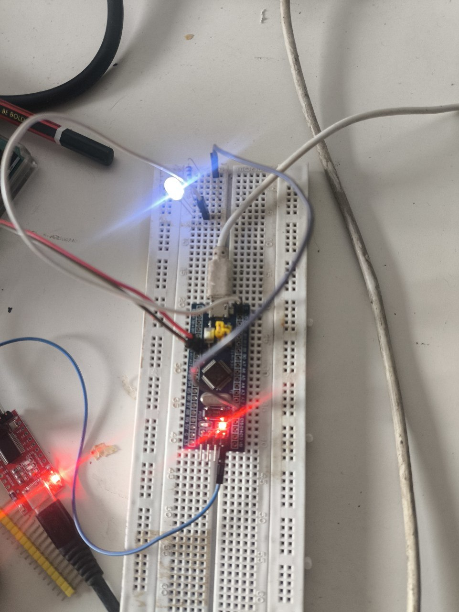
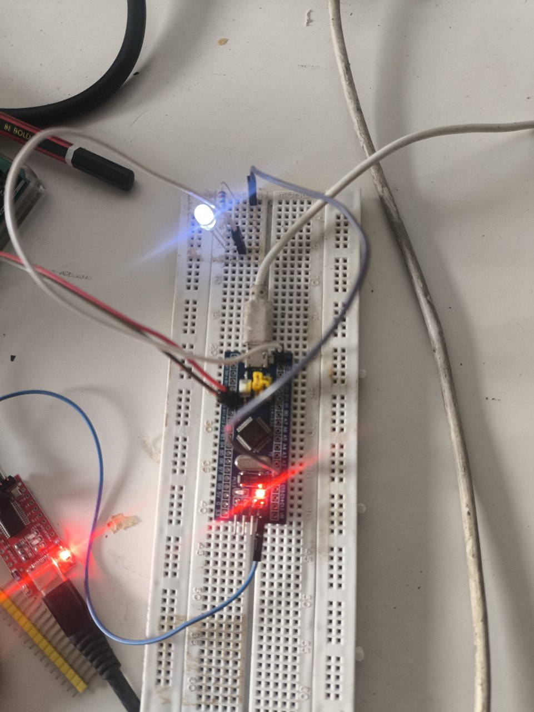

Fading an LED on the Blue Pill: My First Timer Peripheral
Every build so far snapped a pin between two states, on or off, one bit at a time. This one asked the chip to hold a brightness instead, and the answer wasn't a faster loop, it was handing the timing over to a peripheral built for exactly that.
Parts
- "STM32F103C8T6 Blue Pill"
- "HW-417C USB-to-UART adapter"
- "Micro-USB cable"
- "Breadboard + jumper wires"
- "1 LED"
- "1 220-330 ohm resistor"
Every project up to this one only ever asked a pin to be one of two things, high or low, on or off. The button build read one bit in, the LED and UART builds pushed bits out, but nothing in between. This one asked for something a plain GPIO write can't give you at all: a brightness that isn't fully on or fully off, fading smoothly instead of snapping between states. That turns out to be a hardware timer's job, not a digitalWrite() loop's, and this was the first build where I had to reach for one.
The hardware
New parts this time, first time I've needed anything beyond the Blue Pill and the adapter for the actual circuit:
this one
- STM32F103C8T6 Blue Pill
- HW-417C USB-to-UART adapter, same GND/TXD/RXD wiring as every build before
- One LED
- One ~220-330 ohm resistor
The onboard PC13 LED, the one every earlier build used, was a non-starter here — it isn't wired to any timer channel, so it can only ever be driven as a plain digital pin. Fading needs a pin a timer can actually reach, so I picked PA1, which sits on TIM2's second channel.
First I had to clear the board. The button project's jumper wires and its friction-fit pin at PA0 came out to make room. PA1 turned out to have the exact same problem PA0, A9, and A10 all had before it — it's on the Blue Pill's bare, unpopulated GPIO row, no pin sticking up for a jumper to grip. Same fix as every time before: snap a single pin off a spare header strip and press it into the hole by hand. Four bare holes conquered now, and it's stopped being a surprise and started being just the first step of wiring anything on that row.
LED and resistor went on the breadboard straddling the center gap, same as the button did — resistor in series between PA1 and the LED's anode, the cathode running to the Blue Pill's bottom-header GND pin, the one row on the board that actually has a protruding pin to grab.
The code
This is where I expected to be fighting registers, and instead the framework mostly disappeared:
#include <Arduino.h>
#define LED_PIN PA1
void setup() {
// analogWrite() configures the pin's timer/alt-function automatically
}
void loop() {
for (int brightness = 0; brightness <= 255; brightness++) {
analogWrite(LED_PIN, brightness);
delay(5);
}
for (int brightness = 255; brightness >= 0; brightness--) {
analogWrite(LED_PIN, brightness);
delay(5);
}
}analogWrite() on STM32duino quietly does the part I was bracing to do by hand: find which timer channel the pin belongs to, put it into PWM mode, and start it running. setup() doesn't even need a pinMode() call — the first analogWrite() handles that on its own. The loop itself is just counting 0 to 255 and back, once every 5 milliseconds a step, but underneath that innocent-looking analogWrite() a timer is now toggling PA1 on its own, at a frequency way past what my eye or the LED's own decay time can follow. Built clean first try — 5.6% RAM, 22.6% flash.
Getting it talking again
Flashing didn't go cleanly, though. First attempt: BOOT0 to 1, RESET, platformio run -t upload, and stm32flash came back with Failed to init device, timeout instead of a progress bar. Every earlier build's flash failures had a clean single cause — BOOT0 left at the wrong value, mostly — but this one had three plausible suspects at once: BOOT0 and BOOT1 are easy to mix up on a glance, the freshly friction-fit PA1 pin could've been jostled while I was still routing the LED and resistor around it on the breadboard, and the adapter's GND/TXD/RXD wires sit right next to where I'd just been working. I checked all three, reseated what looked the least snug, pressed RESET again, and reran the upload — clean pass, done in a few seconds. I never isolated which one was actually the problem, which bugs me a little, but the honest lesson is that adding a new component next to already-working wiring is exactly the moment to expect the old wiring to be the thing that broke.
BOOT0 back to 0, one more RESET, and the LED started breathing on its own — brightening, dimming, brightening again, with nothing in loop() doing anything but counting:


The LED is never actually dim. At any instant it's either fully on or fully off, exactly the two states every earlier build already had access to — PWM doesn't invent a third state, it just switches between the two so fast, and for such a controlled fraction of each cycle, that the LED's own afterglow and my eye's persistence of vision blur it into something that looks continuous. What actually changed this time wasn't the pin's vocabulary, it was who's in charge of the switching: every earlier blink or fade I could have hand-rolled would've meant a delay loop eating the CPU to hold a duty cycle steady, and here a timer peripheral does that entirely on its own once configured, the same way the UART build's USART peripheral shifted bits out without the CPU babysitting each one. That's the pattern I keep running into on this board — the framework calls that look the simplest are usually the ones quietly handing real work off to a peripheral built to do it better than a loop ever could.
Notes from readers
Comments — via GitHub